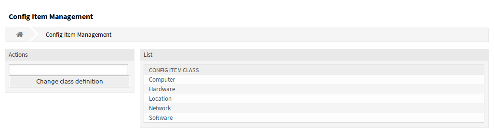

配置项¶
使用此屏幕可管理配置项类的类定义。“配置项类管理”屏幕在 CMDB设置 组的 配置项 模块中可用。

配置项管理屏幕
若要添加或编辑配置项类的类定义，请执行以下操作：
- 从左侧边栏的下拉列表中选择一个类。
- 点击 修改类定义 按钮。
- 以 YAML 格式添加或编辑类定义。
- 点击 保存 或 保存并完成 按钮。

编辑配置项类定义屏幕
若要查看一个配置项类的类定义：
- 点击类列表中的一个类名称。
- 通过单击类版本列表中的类名来选择版本。

配置项目类版本屏幕
参见
新的配置项类可以添加到管理员界面的 通用目录 模块中。
类定义类型和表单元素¶
定义类时可以使用多个输入字段类型。 这些输入字段类型用于生成创建新的或编辑现有配置项的编辑表单。
警告
从 7.0.7 版开始，配置项类定义必须以 YAML 格式编写。
以下内容是一个名为 Operating System（操作系统） 的表单字段的示例。
---
- Key: OperatingSystem
Name: Operating System
Input:
Type: Text
Size: 50
MaxLength: 100
添加或编辑此资源时，可以使用以下设置。 标有星号的字段是必填字段。
Key*- 必须是唯一的，并且只接受字母和数字字符。 如果更改了，则无法从旧定义读取数据。
Name*表单中字段的标签。 可以在此字段中输入任何类型的字符，包括大写字母和空格。
注解
建议始终使用英文单词作为名称。
参见
可以使用自定义翻译文件将名称翻译成其他语言。 请参阅开发人员手册中的 自定义翻译文件 章节。
Searchable- 定义字段是否可搜索。 可能的值为 0 或 1。
Input*启动输入字段的定义。 输入字段可以包含以下属性：
Type*定义元素的类型。 必须缩进为逻辑块。 可能的值是：
Text：单个文本字段。TextArea：一个包含多行的文本字段。GeneralCatalog：用于选择通用目录类的下拉列表。 在将其用作输入类型之前，必须先定义通用目录类。 通用目录类的项目将是下拉列表的选项。CustomerCompany：从数据库后端选择客户的下拉列表。Customer：从数据库后端选择客户用户的下拉列表。 该字段可以与通配符（*）一起使用。Date：用于选择日期的字段。DateTime：选择日期和时间的字段。Integer：一个带整数的下拉列表。
Required- 定义字段是否为必填字段。 可能的值为 0 或 1。
Size- 定义文本字段的大小。 该值必须是正整数。
MaxLength- 定义可在文本字段中输入的最大字符数。 该值必须是正整数。
RegEx- 用于限制文本字段的可能值的正则表达式。
RegExErrorMessage- 如果输入内容与正则表达式中给出的定义不匹配，则显示错误消息。
Class- 用于下拉列表的类的名称。
GeneralCatalog类型必需。 Translation- 定义是否必须翻译通用目录的项目。 可能的值为： 0 或 1。
YearPeriodPast- 定义在当前日期或日期/时间字段中可供选择的过去的年份。 该值必须是正整数。
YearPeriodFuture- 定义在当前日期或日期/时间字段中可供选择的未来的年份。 该值必须是正整数。
ValueMin- 定义整数字段的最小值。
ValueMax- 定义整数字段的最大值。
ValueDefault- 定义整数字段的默认值。
CountMin- 定义当前输入类型的最少可用的数量。 该值必须是正整数。
CountMax- 定义当前输入类型的最多可用的数量。 该值必须是正整数。
CountDefault- 定义默认情况下应显示的字段数。 该值必须是正整数。
Sub- 在输入字段中定义子元素。 子元素可以包含自己的输入字段。 如果您在主要属性下具有某些属性，则非常有用。
SuppressVersionAdd当属性发生更改时，可以使用此选项来禁止创建配置项的新版本。 可能的值是
UpdateLastVersion和Ignore。UpdateLastVersion：如果设置了此值且没有其它更新的属性，则在当前版本中更新属性而不创建新版本。Ignore：如果设置了此值并且没有其它更新的属性，则不会执行任何操作，也不会创建新版本。
类定义参考¶
下面的类定义是所有可能选项的一个示例。
---
- Key: OperatingSystem
Name: Operating System
Searchable: 1
Input:
Type: Text
Required: 1
Size: 50
MaxLength: 100
RegEx: Linux|MacOS|Windows|Other
RegExErrorMessage: The operating system is unknown.
CountMin: 0
CountMax: 5
CountDefault: 1
- Key: Description
Name: Description
Searchable: 0
Input:
Type: TextArea
Required: 0
CountMin: 0
CountMax: 1
CountDefault: 0
- Key: Type
Name: Type
Searchable: 1
Input:
Type: GeneralCatalog
Class: ITSM::ConfigItem::Software::Type
Required: 1
Translation: 1
- Key: CustomerID
Name: Customer Company
Searchable: 1
Input:
Type: CustomerCompany
- Key: Owner
Name: Owner
Searchable: 1
Input:
Type: Customer
- Key: LicenseKey
Name: License Key
Searchable: 1
Input:
Type: Text
Size: 50
MaxLength: 50
Required: 1
CountMin: 0
CountMax: 100
CountDefault: 0
Sub:
- Key: Quantity
Name: Quantity
Input:
Type: Integer
ValueMin: 1
ValueMax: 1000
ValueDefault: 1
Required: 1
CountMin: 0
CountMax: 1
CountDefault: 0
- Key: ExpirationDate
Name: Expiration Date
Input:
Type: Date
Required: 1
YearPeriodPast: 20
YearPeriodFuture: 10
CountMin: 0
CountMax: 1
CountDefault: 0
- Key: LastUsed
Name: Last Used
Input:
Type: DateTime
Required: 1
CountMin: 0
CountMax: 1
CountDefault: 0
SuppressVersionAdd: UpdateLastVersion